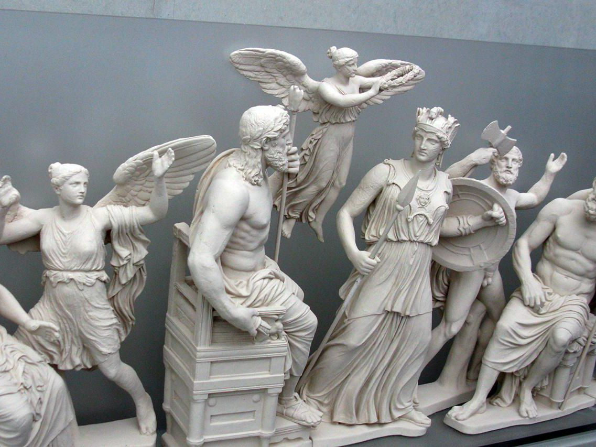
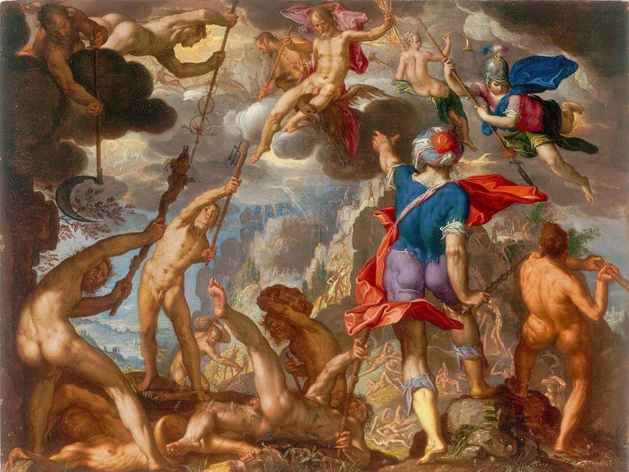
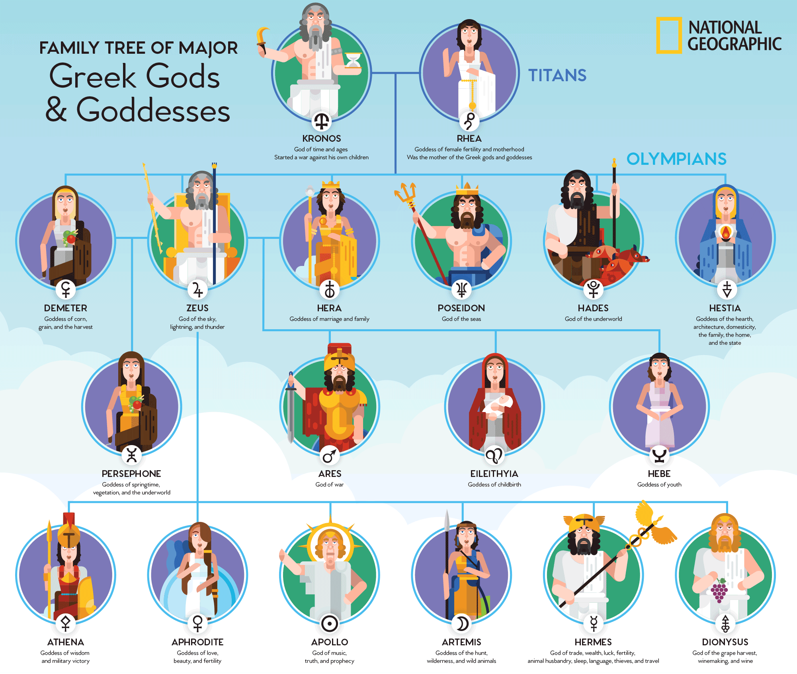

The Gods of Olympus were the main Greek gods who lived on the top of mount Olympus. The Olympian gods rose to power by defeating the Titans in the War of the Titans (also called the Titanomachy). They were the children of Cronus and Rhea. Zeus, Poseidon, Hera, Hestia and Demeter, Hades, and later on Apollo, Artemis, Hermes, Athena, Hephaestus, Aphrodite and Ares. Over the years, the Demi-god Dionysus became part of their group on Olympus. It is very common to refer to the Greek pantheon as “the 12 Olympian Gods”. However, the ancient Greeks did not worship specific twelve gods. Instead, there were many more, major and lesser - but nonetheless important - gods and others that were worshiped locally. The rule of Zeus was not absolute. To obtain it, Zeus and his kind had to wrestle with the Titans and then with the Giants. The Battle of the Giants was more formidable and lasted more years. The greatest Olympians took part in the battle. The Giants were not as immortal as the Titans. But they had tremendous power and a monstrous form. After a long and ferocious war, the Greek gods managed to defeat all Giants with the help of Zeus’ demi-god son, the hero Hercules. The Olympian gods had the same inclinations and the same desires, the same flaws and strengths as the mortals, even sometimes living in similar conditions. They looked like humans, but they were, almost always, prettier and stronger than humans. The gods could be transformed as they wished or teleported to any place they wished to. This was also a motivation for the famous Greek hospitality, which was a very important institution in ancient Greece. The Greeks would always welcome with special joy any foreigner, who could, after all, be a god in disguise! As can be seen from many myths, the gods of the Greeks were not indifferent to humans. On the contrary, they often came in contact with them, traveling secretly, transforming themselves into ordinary people, rewarding the good and punishing the unjust. The gods did not find a better way to be happy than to live as humans. But they were freed from two great sufferings of mankind: the fear of deprivation and the fear of death. Indeed, the privilege of the gods is carefree. They never think about illness, old age, death. The nectar, the wine of the gods, and the ambrosia, the divine food of Olympus, ensure beauty, health and happiness for the immortals. The immortal Greek gods settled on the peak of Olympus. There, they built their divine palaces and from there they looked upon the whole world. The ancient Greek religion is based on wisdom. People admired the gods immensely, without envying them. Famous temples were built for them and famous works of art were inspired by them. The gods reflected the ideals of the ancient Greek people. |
| Click for More Information on the Olymians and Other Gods  |